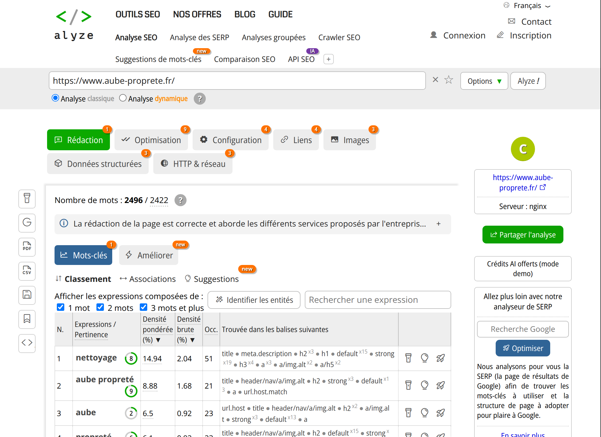

Lors de mon stage de première année, j'ai eu l'opportunité de participer activement à la refonte du site web de l'entreprise. Cette expérience m'a permis de découvrir le travail en équipe et de développer plusieurs compétences professionnelles.
Participation à la refonte du site
J'ai pris part à la modernisation du site internet de l'entreprise, en collaborant avec l'équipe sur la nouvelle structure, l'intégration des contenus et l'amélioration du design. J'ai pu observer le processus complet, de la conception à la mise en ligne, en comprenant l'importance de la planification et de la répartition des tâches.
Repérage et remontée de bugs
Lors de la phase de test, j'ai repéré certains bugs et dysfonctionnements sur différentes pages du site. J'ai pris soin de les documenter et de les remonter à mon maître de stage, ce qui a permis à l'équipe de les corriger rapidement. Cette démarche m'a sensibilisé à l'importance du suivi des incidents et de la communication efficace au sein d'une équipe.

Collaboration et communication
Tout au long de mon stage, j'ai eu l'opportunité de travailler en étroite collaboration avec mon maître de stage. Chaque matin, nous organisions une courte réunion afin de faire le point sur l’avancement des différents projets et de répartir les tâches à accomplir dans la journée.